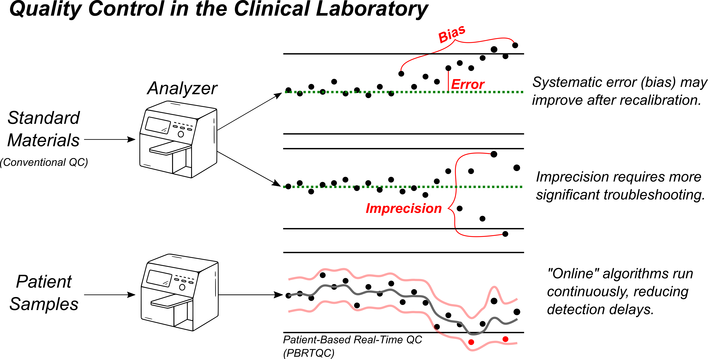
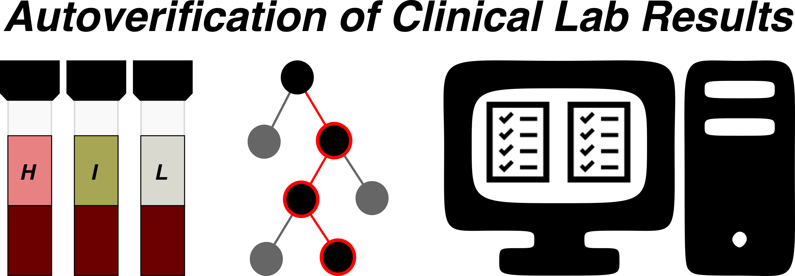
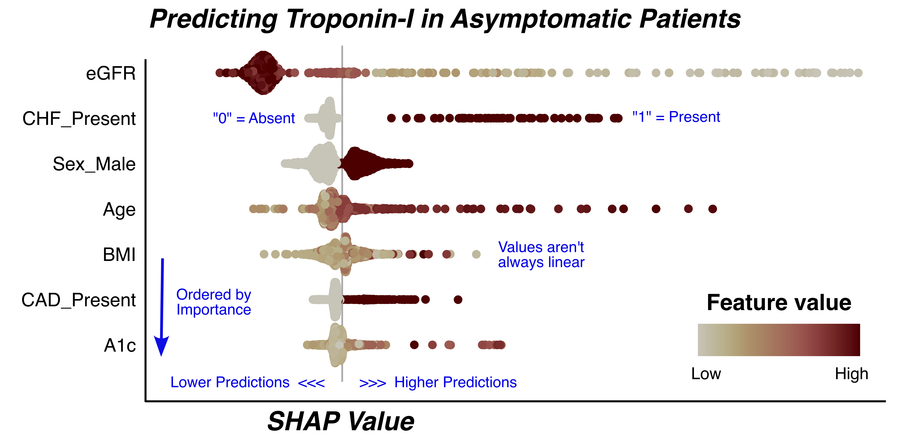

Activity 1: Common Pitfalls
Case #1: Evaluating AI Use-Cases
Background
The goal of the QC process is to identify and remove sources of error stemming from avoidable factors in how our analyzers measure results. While many factors contribute to analytical performance, the errors that result can be classified into 2 primary categories: poor accuracy and poor precision. “Bias” refers to inaccuracy in a measurement that routinely over- or underestimates the true result, such as calibration drift. Imprecision, on the other hand, refers to random measurement error without a discernable pattern.

The clinical laboratory has two primary tools for quality control: internal quality control (IQC) standards and real-time patient results. IQC consists of periodically measuring a standard material with known concentration. This allows for rapid, straightforward error detection and troubleshooting, but requires instruments to be taken offline for a period of time. Patient-based, real-time quality control (PBRTQC) relies on observing patterns of variation within the routine clinical testing to identify errors in the intervals between IQC is performed. It is often more complex, given the competing signals present in the data stream, but can be valuable in reducing the impact of analytical issues by detecting them more rapidly.
A machine learning solution that incorporates these complementary data streams could be a valuable addition to the clinical laboratory’s quality toolkit.
Background
Autoverification refers to the automated release of laboratory test results that are unlikely to have been the result of a preanalytical or analytical error, bypassing manual review by a technologist or pathologist. The primary objective is to improve laboratory efficiency, reduce turnaround time, and minimize the risk of human error in the post-analytical phase. Traditional autoverification rules are typically built via LIS rule sets that incorporates analytic flags, delta checks, reference intervals, and other decision thresholds derived from expert consensus or regulatory guidance (e.g., CLSI AUTO10-A).

However, conventional autoverification systems can struggle with the complexity and nuance of real-world patient data, particularly in the presence of atypical clinical scenarios or concurrent pre-analytical and analytical confounders. Errors may occur due to rigid or incomplete rules, leading either to inappropriate autoverification or excessive manual holds.
AI–driven autoverification aims to enhance performance by learning patterns from large datasets of historical results, including rare or complex scenarios. By integrating multiple data sources (patient demographics, clinical context, analyzer flags, historical trends), AI-based autoverification systems have the potential to optimize both sensitivity (error detection) and specificity (avoiding unnecessary manual review), improving both quality and operational efficiency.
Background
Serum protein electrophoresis (SPEP) is a critical diagnostic tool for identifying and characterizing monoclonal gammopathies and other disorders of serum protein distribution. Accurate interpretation of SPEP patterns requires specialized expertise to distinguish between polyclonal and monoclonal patterns, recognize atypical presentations, and correlate findings with clinical and laboratory context. Errors in interpretation can result from subtle pattern recognition challenges, background artifacts, or the presence of confounding clinical conditions (e.g., acute-phase response, nephrotic syndrome).
AI-based SPEP interpretation could automate the identification of monoclonal peaks and other clinically significant patterns. By training on large sets of expert-annotated electrophoresis tracings, such systems can support standardized, accurate, and efficient result interpretation.
Task
Discuss the questions below within your groups. Each tab focuses on a unique step in the complete machine learning life cycle, with its own objectives and considerations. A good AI use-case will have clear, justifiable answers to each of these questions.
1) What should the model be predicting?
2) What should we use as a ground truth label?
3) What should be included in the training data set?
1) How should performance be measured?
2) What thresholds should be considered acceptable?
3) What data should be used in the validation study?
1) What potential benefits could be expected?
2) What potential harms might be introduced?
3) Will the predictions be helpful in changing practice?
1) How will we monitor performance?
2) What will we do if performance deteriorates?
1) Are there human factors to consider?
2) Are there regulatory requirements to consider?
Case #2: Rare Event Detection
#| '!! shinylive warning !!': |
#| shinylive does not work in self-contained HTML documents.
#| Please set `embed-resources: false` in your metadata.
#| standalone: true
#| viewerHeight: 650
webr::install("munsell")
suppressPackageStartupMessages(library(bslib))
suppressPackageStartupMessages(library(shiny))
ui <- page_fillable(
fluidRow(column(8, titlePanel("Evaluation with Imbalanced Classes")),
column(2, sliderInput("prevalence", "Class Balance:",
min = 0.005, max = 1, value = 1, step = 0.005, ticks = FALSE)),
column(2, sliderInput("separation", "Separation:",
min = 0.05, max = 0.5, value = 0.5, step = 0.05, ticks = FALSE)),
width = "100%", style = "height: 80px;"
),
fluidRow(
column(4, plotOutput("densityPlot", width = "100%", height = "500px")),
column(4, plotOutput("metricPlot", width = "100%", height = "500px")),
column(4,
fluidRow(
plotOutput("rocPlot", width = "100%", height = "250px")
),
fluidRow(
plotOutput("prPlot", width = "100%", height = "250px")
)
)
)
)
server <- function(input, output) {
suppressPackageStartupMessages(library(tidyverse))
suppressPackageStartupMessages(library(yardstick))
theme_ns <- theme(text = element_text(family = "Helvetica"),
title = element_text(size = 24, margin = margin(0, 0, 8, 0)),
plot.subtitle = element_text(size = 20, face = "plain", hjust = 0),
plot.title = element_text(hjust = 0),
axis.title = element_text(size = 16, face = "bold", margin = margin(4,4,4,4)),
axis.title.x.bottom = element_text(face = "bold", margin = margin(4,0,0,0)),
axis.title.y.left = element_text(face = "bold", margin = margin(0,4,0,0)),
legend.title = element_text(face = "bold.italic", size = 12),
axis.line = element_line(),
axis.ticks = element_blank(),
panel.grid = element_blank(),
panel.background = element_blank(),
strip.text = element_text(size = 12, face = "bold.italic"),
strip.background = element_blank())
theme_set(theme_ns)
sim_data <- reactive({
set.seed(123)
prevalence <- input$prevalence[1]
separation <- input$separation[1]
n <- 10000
n_pos <- round(n * prevalence)
n_neg <- n
pos <- tibble(result = rnorm(n_pos, mean = 0.5 + separation/2, sd = 0.15), label = "Pos")
neg <- tibble(result = rnorm(n_neg, mean = 0.5 - separation/2, sd = 0.15), label = "Neg")
out_prev <-
bind_rows(pos, neg) %>%
mutate(label = factor(label, levels = c("Pos", "Neg")),
estimate = factor(ifelse(result > 0.5, "Pos", "Neg"),
levels = c("Pos", "Neg")),
prevalence = factor("Current"))
out_control <-
bind_rows(
rnorm(5000, mean = 0.75, sd = 0.15) %>% tibble(result = ., label = "Pos"),
rnorm(5000, mean = 0.25, sd = 0.15) %>% tibble(result = ., label = "Neg"),
) |>
mutate(label = factor(label, levels = c("Pos", "Neg")),
estimate = factor(ifelse(result > 0.5, "Pos", "Neg"),
levels = c("Pos", "Neg")),
prevalence = factor("Baseline"))
bind_rows(out_prev, out_control)
})
output$densityPlot <- renderPlot({
gg_input <- sim_data()
counts <- gg_input |>
group_by(label, estimate) |>
summarise(count = n(), .groups = "drop")
ggplot() +
geom_density(data = gg_input, aes(result, y = after_stat(count), fill = fct_rev(label)), alpha = 0.5, linewidth = 0.25, bounds = c(0, 1)) +
#geom_text(data = counts[1,3], aes(label = count), x = 1, y = 35000, size = 3, fontface = "bold") +
#geom_text(data = counts[2,3], aes(label = count), x = 1, y = 40000, size = 3, fontface = "bold") +
#geom_text(data = counts[3,3], aes(label = count), x = 0.9, y = 35000, size = 3, fontface = "bold") +
#geom_text(data = counts[4,3], aes(label = count), x = 0.9, y = 40000, size = 3, fontface = "bold") +
#annotate("text", x = 0.95, y = 44000, label = "Truth", fontface = "bold", size = 4) +
#annotate("text", x = 0.825, y = 37500, label = "Estimate", fontface = "bold", size = 4, hjust = 1) +
#annotate("segment", x = 0.84, y = 37500, xend = 1.05, yend = 37500, color = "gray50") +
#annotate("segment", x = 0.95, y = 32500, xend = 0.95, yend = 42500, color = "gray50") +
#annotate("rect", xmin = 0.84, ymin = 32500, xmax = 1.05, ymax = 42500, fill = NA, color = "black") +
geom_vline(xintercept = 0.5, linetype = "dashed", color = "black") +
labs(title = "Event Distributions", x = "Predicted Probability", y = "Relative Frequency") +
coord_cartesian(clip = "off") +
scale_x_continuous(breaks = c(0, 0.5, 1), limits = c(0, 1.06)) +
scale_fill_manual(values = c("Pos" = "darkred", "Neg" = "darkblue")) +
theme(axis.text.y = element_blank(), legend.position = c(0.9, 0.9), legend.title = element_blank(), legend.background = element_blank())
})
output$rocPlot <- renderPlot({
gg_input <- sim_data()
gg_roc_input <- gg_input |> group_by(prevalence) |> roc_curve(result, truth = label)
ggplot(gg_roc_input, aes(1-specificity, sensitivity, color = prevalence, alpha = prevalence)) +
geom_path(linewidth = 2) +
scale_color_manual(values = c("darkred", "grey50")) +
scale_alpha_manual(values = c(1, 0.25)) +
geom_abline(intercept = 0, slope = 1, linetype = "dashed", color = "grey50") +
labs(x = "1 - Specificity", y = "Sensitivity", title = "ROC Curves") +
theme(axis.text = element_blank(), legend.position = c(0.75, 0.2), legend.title = element_blank(), legend.background = element_blank())
})
output$prPlot <- renderPlot({
gg_input <- sim_data()
gg_pr_input <- gg_input |> group_by(prevalence) |> pr_curve(result, truth = label)
ggplot(gg_pr_input, aes(x = recall, y = precision, color = prevalence, alpha = prevalence)) +
geom_path(linewidth = 2) +
scale_color_manual(values = c("darkred", "grey50")) +
scale_alpha_manual(values = c(1, 0.25)) +
labs(title = "PR Curves", x = "Recall", y = "Precision") +
theme(axis.text = element_blank(), legend.position = c(0.25, 0.2), legend.title = element_blank(), legend.background = element_blank())
})
output$metricPlot <- renderPlot({
gg_input <- sim_data()
metric_group <- metric_set(accuracy, sens, spec, ppv, npv, mcc)
metrics <-
gg_input |>
group_by(prevalence) |>
metric_group(label, estimate = estimate) |>
mutate(Value = round(.estimate, 2),
prevalence = fct_rev(prevalence),
Metric = factor(.metric,
levels = c("accuracy", "sens", "spec", "npv", "ppv", "mcc"),
labels = c("Acc", "Sens", "Spec", "NPV", "PPV", "MCC")))
ggplot(metrics, aes(x = Metric, y = Value, fill = prevalence)) +
geom_col(position = position_dodge(1), show.legend = FALSE) +
geom_text(aes(label = Value), position = position_dodge(1), vjust = -1) +
facet_wrap(~Metric, nrow = 2, scales = "free_x") +
scale_y_continuous(limits = c(0, 1), breaks = c(0, 1), expand = expansion(add = c(0, 0.05))) +
scale_fill_manual(values = c("grey75", "darkred")) +
labs(title = "Performance Metrics", y = "Metric Value") +
theme(axis.text = element_text(size = 12), axis.title.x.bottom = element_blank(), strip.text = element_blank())
})
}
shinyApp(ui = ui, server = server)Case #3: Exploring Explainability
Explaining a Model “Globally”
Explainability techniques are largely classified into those that explain models, or global explanations, and those that explain individual predictions, or local explanations. Estimating the aggregate impact of each feature on model predictions across a full data set can be vital in identifying abnormal, inequitable, or harmful behaviors. Let’s explore how we can use these tools to evaluate how predicted probabilities changes across varying concentrations of our features.
One popular tool that allows for both global and local explanations is SHapley Additive exPlanation (SHAP) values1. The figure below presents the global view of the SHAP values for a model that predicts troponin results in asymptomatic outpatients.
